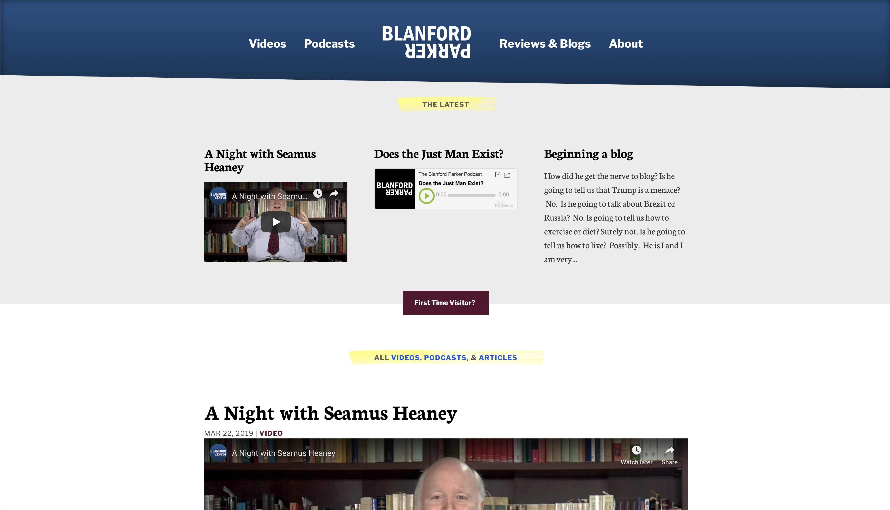

Portfolio ➪ Blanford Parker
What I did
- Website Design
- Website Development
- Branding
Achievements
- Designed, developed, and deployed Blanford's new website and brand in 1 month.
Client Story
After a distinguished stint teaching literature at Harvard, he left for a span at NYU (where he won further awards) to broadcast his ideas to a wider audience.
I was asked to create a brand identity system, and the relevant media platforms, so that Blanford Parker could speak directly to his growing audience.
LOGO
The logo needed to appear on a miniature podcast player, mobile website, paper, desktop, and poster sizes. Instant recognizability at all sizes, while communicating the central brand message, was essential.
The logo, just like Blanford Parker, is looking forward and backwards at the same time. It has a surprising, playful perspective. The logo is looking at a thing from a new vantage point.
Typography
In the written word, type can sometimes express more than the word itself. Blanford Parker’s approach to literature and life is to search deeply, and find a common thread between the old and the new.
The pairing of ITC Franklin Gothic (modern) and Neuton Serif (old world) is a subtle way to reinforce this to each reader.
Website
I created a beautiful website, built on a rapid content delivery system.
It delivers articles, podcasts, and vlogs with rapid page load times, all within an elegant visual structure reflecting the brand.
